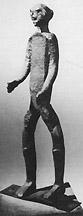
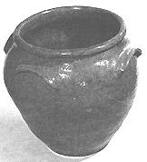
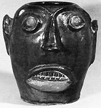
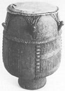

|
The standard portrait of slave life commonly presents a view of field hands
engaged in menial tasks requiring much endurance but little creative thought.
Even when the slaves are viewed as workers, rather than mere laborers, they are
credited with the effort that resulted in bulk commodities--hogsheads of tobacco,
bales of cotton, or bushels of rice. But rarely are the bondsmen acknowledged as
makers of specific objects. Consequently, they are generally not recognized as
craftspersons and never as artists. Yet as early as the eighteenth-century
visitors to the Chesapeake region noted that large plantations depended on the
special skills of slave artisans. In their accounts, these travelers described
scenes resembling industrial villages as well as farms. They observed that a
slave's routine could as often include a task in a workshop as a task in a
tobacco field.
In the 1830s John Mason of Gunston Hall in Virginia recalled the most explicit
statement regarding slave craftsmanship:
... my father had among his slaves carpenters, coopers, sawyers, blacksmiths,
tanners, curriers, shoemakers, spinners, weavers, and knitters, and even a
distiller. His woods furnished timber and plank for the carpenters and coopers,
and charcoal for the blacksmith; his cattle killed for his consumption and for
sale supplied skins for the tanners, curriers, and shoemakers, and his sheep
gave wool and his fields produced cotton and flax for the weavers and spinners,
and his orchards fruit for the distiller. His carpenters and sawyers built and
kept in repair all the dwelling-houses, barns, stables, and ploughs, barrows,
gates, & c., on the plantations and the outhouses at the home house. His coopers
made the hogsheads the tobacco was prised in and the tight casks to hold the
cider and other liquors. The tanners and curriers with the proper vats & c.,
tanned and dressed the skins as well for upper as for lower leather to the full
amount of the consumption of the estate, and the shoemakers made them into shoes
for the negroes ... The blacksmiths did all the ironwork required by the
establishment, as making and repairing ploughs, harrow teeth, chains, bolts &
c., & c. The spinners, weavers, and knitters made all the coarse cloths and
stockings used by the negroes and some of finer texture worn by the white
family, nearly all worn by the children of it... All these operations were
carried on at the home house, and their results distributed as occasion required
to the different plantations.
|

This iron sculpture was created by slave artisans in the
late 18th century.
|
This description provides both an extensive list of slave skills and a partial
inventory of the artifacts they produced. Slaves in the Chesapeake colonies
worked with diverse materials--wood, metal, leather, textiles--and competently
dominated an array of craft techniques. Slaves practiced a broad range of arts
and crafts in a variety of contexts. Only recently have historians come to
appreciate the value of Afro-American material culture to our understanding of
the slave experience.
Slave artisans played a salient role on the big plantations of Virginia and the
Carolinas. Without question they made money for the gentry. Skilled slaves
allowed their owners to conserve their cash, enabling planters to produce the
goods they otherwise would have had to purchase. And slave artisans also
generated income when they were hired out to neighboring planters or to nearby
townspeople. Slave artisans, then, both preserved and created capital. But
craftsmanship proved valuable to the slaves themselves for other reasons.
Skilled work not only gave craftspersons high prestige within the slave
community but also provided a means for them to have money of their own, leading
ultimately, in some cases, to the purchase of their freedom. Skill thus came to
equate with liberty in the minds of the slaves. And it is no mere coincidence
that major slave rebellions were organized by craftsmen or that there were a
high number of skilled blacks listed in runaway notices.
The making of objects is generally regarded as a way for people to gain control
of the world around them. Indeed, there is profound therapeutic value for one's
self-esteem attached to craft skills. For slaves, who keenly sensed that they
were under the control of others, craftsmanship provided a means of regaining
and establishing their sense of self-worth, albeit in a manner that often
augmented the fortunes of the master class. A slave blacksmith, for example,
kept the plantation on its productive schedule by making and repairing the
essential tools required for cultivation. But at the same time he frequently
also took command of plantation routine and orchestrated completion of the
annual work cycle. Consequently, the slave blacksmith could, if he chose,
sabotage a year's production. Should he slow down on the repair of the tools,
the field tasks would not be completed on schedule, and as a result, the planter
might lose a profitable sale. It is crucial, then, to examine slave crafts by
identifying the motives of the artisans, which, more often than not, were at
cross-purposes with those of their owners. And even if the slaves' goals were
shared with their masters, the bondsmen no doubt realized different benefits
from their work.
While no written accounts of slave craftsmanship from a slave's point of view
have survived, enough evidence exists that offers mute but nonetheless eloquent
testimony regarding slave achievements. Such is the case for Dave (1785-1863), a
slave from the Edgefield District of west-central South Carolina. Dave, a slave
potter, illustrates well the life and experiences of a slave artisan. He is
especially important because Dave both wrote on his pieces and made very large,
distinctive pots. Most Southern pottery in the eighteenth and nineteenth
centuries was made at numerous small, family-run operations owned by whites. But
in the Edgefield District, a rather ambitious ceramic industry was founded
between 1810 and 1820. Owing to the abundant supply of excellent clays in the
area, a number of commercial shops were opened that employed slaves as laborers.
They were put to work digging clay, grinding and mixing glazes, cutting wood for
fuel, and loading, firing, and unloading kilns. Eventually they were trained to
operate kick wheels on which they crafted all manner of jugs, churns, and other
containers. As a turner of wares, Dave came to be one of the more highly
regarded blacks at the pottery shop at Stoney Bluff plantation near Miles Mill.
|

This pot was made by a slave known only as Dave the Potter,
in 1862 in South Carolina.
|
But one ability set Dave apart from the other slave potters--he was literate.
Trained first as a typesetter at a local Edgefield newspaper before being put to
work with clay, Dave showed his earlier talent by writing poems on the sides of
his larger pots. Many of his poetic messages, usually rhymed couplets, were
comments on the pieces of pottery itself: "Put every bit between / Surely this
jar will hold fourteen [gallons]"; "A very large jar which has four handles /
pack it full of fresh meat--then light candles"; "This noble jar will hold twenty
/ fill it with silver then you will have plenty." In one case Dave commented on
his own enslavement: "Dave belongs to Mr. Miles / where the oven bakes and the
pot biles." He also marked his pieces with the date of manufacture, his name,
and the letters "Lm" for Lewis Miles, the owner of the pottery. While enough
pots survived with Dave's signature or his distinctive "Lm" mark to show that he
made many kinds of wares, the most numerous type left is large storage crocks
made for holding ashes or for pickling meat. The largest of these, which Dave
labeled "A Great & noble Jar," has an estimated holding capacity of forty-four
gallons. One of the largest pieces of stoneware pottery ever made in the South,
it stands out as a monument among utilitarian works. Moreover, Dave had a
distinctive style of making crocks. They are very narrow at the bottom and flair
to their greatest diameter near the top rim. Thus, they seem to teeter
precariously as the upper section extends far out over its base. Both scale and
shape draw attention to Dave's work.
There are messages embedded in Dave's pots that transcend the life and work of
one lone slave artisan. They convey the slave's exceptional mastery of his
material. He could work more clay more spectacularly than any potter of his day,
white or black. And the poems he composed reveal a marked ability of literary
expression.
Slave craft, then, served both as an alternative mode of slave protest and
fostered an alternative aesthetic. Moreover, it is in the aesthetic dimension of
an object that we encounter the deepest and most significant layer of meaning
that slave-made artifacts held for their makers. Aesthetics, the feeling for
form, is inextricably tied to cultural identity. What one senses as beautiful or
ugly reflects the learned values of one's culture. These values can be best
witnessed in artifacts in which a premium is placed on decoration, artifacts in
which material is manipulated expressly for symbolic purposes. While Dave's
monumental pots engaged an aesthetic will and served latent symbolic functions,
it was a rather different genre of Edgefield ceramics that best illustrates the
aesthetic quotient of slave arts and crafts.
Small jugs sculpted to resemble human faces appeared throughout the slave South.
They represented the potters' artworks as opposed to their craftworks. These
objects were made at the Edgefield potteries as well, but in the style that was
quite distinct. By the 1850s it was common for the eyes and teeth of Edgefield
face vessels to be made with a white porcelain-like clay that was inserted into
the stoneware body of the vessel. These inserts were not glazed so that when
completed the white, matte finish eyes and teeth contrasted with the rest of the
dark, shiny face. The combination of two clay types in one vessel was a
difficult maneuver because the two media shrank at different rates and had
different firing temperatures. That the slave potters negotiated this complex
decorative ploy so successfully speaks well for their technical ability, but it
is not technique that makes these sculptures particularly Afro-American in
character. The will to break with precedent and experiment with the
potentialities of materials, as in the Edgefield face vessels, reveals evidence
of the free-wheeling innovation and improvisation that characterizes so much of
Afro-American expressive culture. Slave potters seized an opportunity within the
conventions of Anglo-American folk ceramics and made a statement that was theirs
alone. No contemporary Southern white potters are known to have ever combined
two different clays in one vessel.
|

This vessel was created in 1860 by a slave potter in South
Carolina.
|
Although the function of Edgefield face vessels is unknown, they almost
certainly were not utilitarian objects. Rarely were they more than five inches
tall. Yet with all the attention and care that was required in their
manufacture, these small jugs must have been important objects. It is tempting
to compare these clay sculptures to African sculptures, particularly to those of
the Bakongo people of Central Africa, from whence the bulk of South Carolina's
slave population was derived. Art historian Robert Farris Thompson, who has made
such a comparison, finds the same pinpoint pupils within white eyes, the same
long hooked nose, the same siting of the nose at a point relatively high above
the lips, the same open mouth with bared teeth, the same widening of the mouth
so that it extends across the width of the jaw.
So many resemblances, Thompson argues, were not mere coincidence, and he
suggests that we regard Edgefield face vessels as evidence of the survival of
African artistic forms within the experience of slavery. Further, the
mixed-media quality produced by the insertion of white clay into a darker vessel
was alien to European artistic canons. Europeans stressed the use of a single,
pure material. But the combination of two materials was perfectly consistent
with African sculpture. And because such jugs were apparently known among the
slaves as "monkey jugs," and because in the Bakongo language clay water carriers
are called mvangi, the connections between Edgefield and Africa seem quite
strong. White potters often referred to their own face vessels as "ugly jugs,"
thus signaling the spirit of whimsy and tomfoolery in which they were made. No
doubt they saw in the works made by slaves simply a black version of the
grotesque. But what apparently motivated the slave potters of Edgefield was
their own sense of good form, their own cultural preferences derived from a past
very much rooted in Africa rather than Europe or America. The work of slave
potters showed the black community the potential of the future which they might
achieve through action and courage. The face vessels put them in touch with a
heritage that was almost lost.
The examples of ceramic skill suggest a broad range of artistic expressions.
Some pots--such as the syrup jugs or cream risers--could be very Anglo-American;
others, like the face vessels, were very Afro-American. Craftsmanship thus
provided a means both of accommodation and resistance, ways to participate in
mainstream society and to make a distinct ethnic statement. This same variety
existed throughout most black crafts. In textiles, for example, slave women made
bolts of cotton or wool cloth to use for tailoring the most usual types of
garments. Or they pieced together various scraps to create quilts with geometric
designs reminiscent of African patterns. Baskets made in the Carolina low
country exhibited African coiling techniques. These were used both to carry
produce from the fields and to provide fancy "show baskets" for home use. Slave
craftsmen utilized woodworking skills both to make furniture for whites and to
fashion furnishings and ornate woodcrafts for themselves. Just as art could
spring from craft, black identity could always emerge in the midst of doing a
master's bidding.
Because the slave community was a folk society, its artifacts usually combined
beauty and utility, and its artifacts were mostly tied to the domestic sphere.
Clusters of specialized production craftsmen--such as on a large plantation like
Gunston Hall or in an industrial setting like Edgefield--were the exception. Most
slaves created within the contexts of the quarters where their skills were
directed chiefly at the tasks required for the maintenance of the household.
Women patched and mended clothes; men plastered chimneys or shingled roofs.
These were mundane but essential chores, but they also exposed the potential for
creativity and the display of talent. The routines of daily work provided the
context in which the slaves honed their abilities to perfection. House repairs
were one way to learn carpentry; mending taught slaves how to tailor or how to
do patchwork quilts. From the process of making do the art of living emerged.
Afro American folk art, then, has been focused most closely around the home.

Two banjos used by slaves. The smaller design is much more
African, the larger reflects an American influence.
|
The ex-slave narratives collected in the 1930s contain numerous recollections of
such day-to-day household skills. In one of these accounts, Yach Stringfellow of
Brenham, Texas, noted: "In the long winter days the men sit around the fire and
whittle wood and make butter paddles and troughs for pigs and such and ax
handles and hoe handles and box traps and figure-four traps. They make combs to
get wool clean for spinning." Carving skills such as these no doubt gave slaves
a sense of self-sufficiency. And their handiwork allowed them to provide for
many of their physical needs. Moreover, a smoothly finished and delicately
balanced ax handle could be a thing of beauty as well as a useful item. To an
important degree, though slaves were owned by others, their crafts enabled them
to feel as though they owned themselves.
The nature of the slave community promoted a degree of independence among the
bondsmen. Slaves, for example, were encouraged to fend for themselves by growing
their own food, making their own clothes, and building and repairing their own
houses. And slaves all across the South kept their own garden patches. The
spirit of independence that accompanied this modest "landholding" by slaves was
augmented by their craft abilities. Once they took claim over the garden plot
and its produce, the slaves' expertise in various crafts allowed them to create
an environment marked in a way that most judged to be adequate if not suitable.
They resided in cabins that they had built with timber felled by the caves
themselves. In their homes they placed homemade beds, stools, tables, blankets,
articles of clothing, shoes, baskets, boxes, and numerous utensils carved from
wood and gourds. No doubt slaves kept some of their implements and possessions
outside in the yard as well, a yard they swept clean and packed hard like those
found in African homesteads. It was here in the evenings and on Sundays and
holidays that other slaves assembled to visit and sing songs to the
accompaniment of African-inspired musical instruments, including banjos,
fiddles, and drums. This was a world, says Eugene D. Genovese, the slaves made.
It was a world shaped significantly by the slaves' craft skills.
|

This drum was used on a Virginia plantation.
|
The importance of slave crafts did not diminish with the abolition of slavery.
The skills that blacks acquired in bondage also served them well during
Reconstruction and later. They provided the free men and women with a basis for
entry into the free-market economy. This succession is explained by Ace Jackson,
a contemporary Afro-American mason in Mobile, Alabama, who preserves in his work
a family tradition. "I done all of it," explains Jackson. "I was raised into the
trade. My father was a brick mason. My mother's father was a brick mason. My
father's father was a full-blood African, and he was a brick mason. He was a
slave." Such craft skills gave blacks bright moments of inspiration and the
encouragement to endure and prevail over their misfortunes. Confidence rooted in
a spirit of self-sufficiency never withered, and today we still can find many
practitioners of the old crafts. Hundreds of coiled "sweetgrass" basket makers
ply their craft from South Carolina to Florida. Thousands of black quilters from
Virginia to Idaho make distinctive Afro-American patterns. Plenty of whittlers
still carve toys and walking sticks, and an occasional blacksmith serves the
ironwork needs of a community. These modern craftspersons are not marginal
people frozen in time. Rather, they are contemporary citizens who participate
fully in the modern world. They do, however, know their history and treasure the
lessons of their ancestors. The traditions of skill which they continue to enact
are a heritage that they carry forward as a gift of confidence for their
children. Slave crafts, then, continue to serve as a source of inspiration
instilling the same positive message today that they did in the eighteenth and
nineteenth centuries.
Source: Randall M. Miller and John David Smith, eds. Dictionary of
Afro-American Slavery (Westport, CT: Praeger, 1997), 64-70.
|